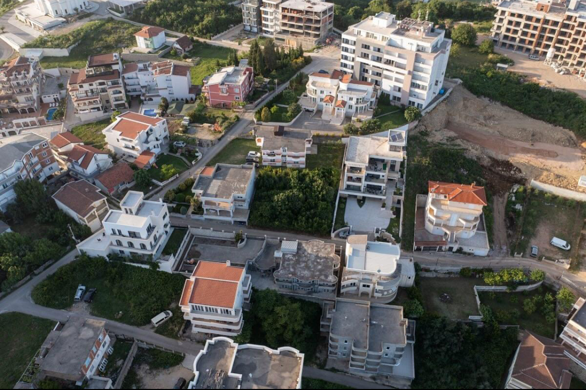
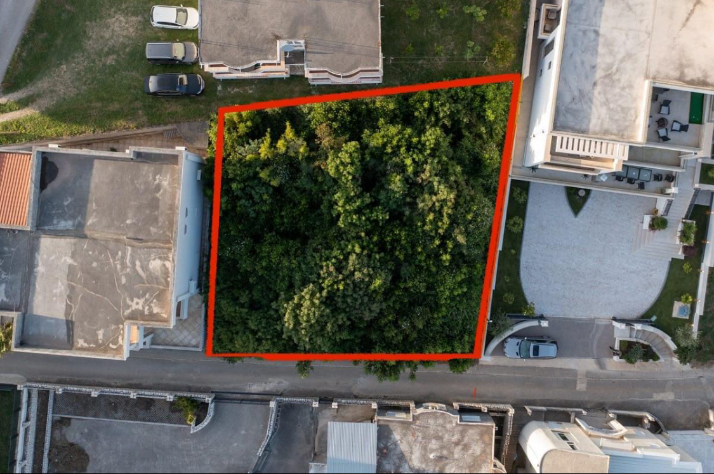
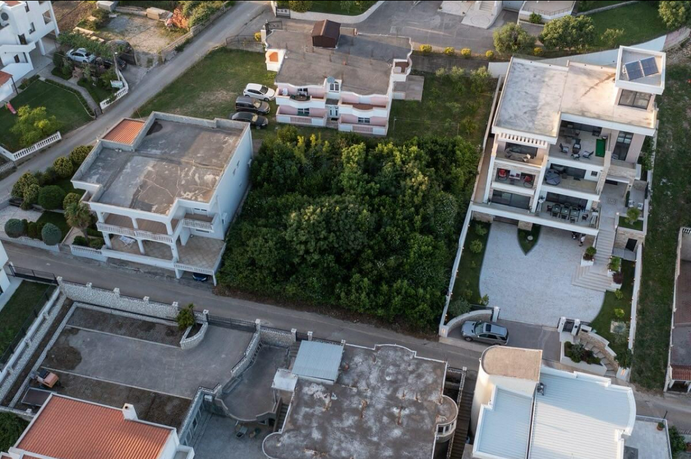

Truall
Ulqin
Në Shitje
Gacaferi RealEstate
043 886 665
Truall
10-11-2024
Pershkrimi:
Ofrohet për shitje trualli me sipërfaqe prej 5 Ari (507m²) me lokacion në rr. ‘Rruga e Kosovës’ zona e Pinjeshit, Ulqin. Trualli ndodhet në një lokacion të përshtatshëm per ndërtim ku edhe është i pajisur me leje ndërtimi për 1150m² P+4. Zona e Pinjeshit është një ndër zonat më të kërkuara në Ulqin për shkak të pozitës gjeografike e cila i siguron qetësi dhe pamje të hapur, po ashtu edhe afërsi me pishat dhe detin. Dokumentacion i plotë dhe përkthim i menjehershëm tek Noteri. Gacaferi Real Estate është zgjedhja juaj kudo!